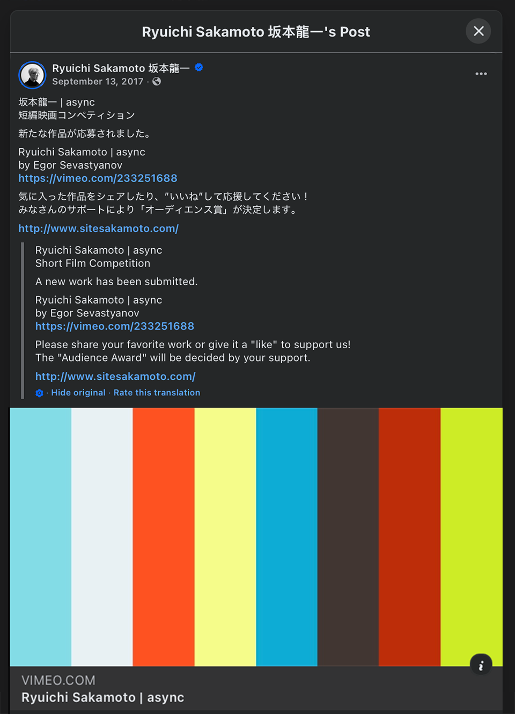

2017
In 2017 Ryuichi Sakamoto opened an international short film competition for his album async. Anyone could make a film to its music. The winners were chosen by Sakamoto and Apichatpong Weerasethakul. Nearly 800 films were sent in.
I chose two tracks, Life, Life and Andata. The images came from my archive, footage I had shot between 2013 and 2017 in different places. Cities, factories, landscapes, people on their way somewhere. I didn’t shoot anything new for the film.
One shot, a shopping mall parking lot, also appears in Untitled.
In September 2017 the film was posted on Sakamoto’s official Facebook page.

Music:
Ryuichi Sakamoto
— Life, Life
— Andata
Competition source:
International Short Film Competition